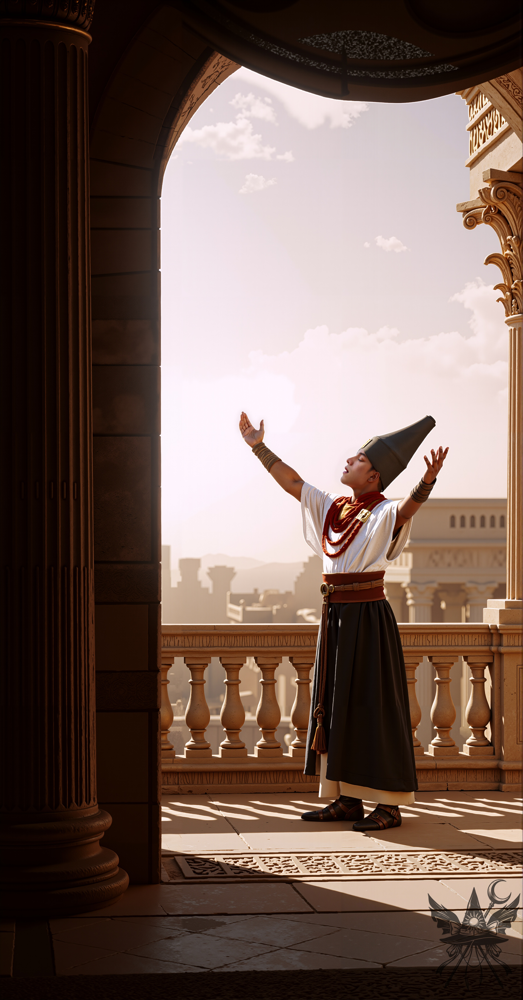
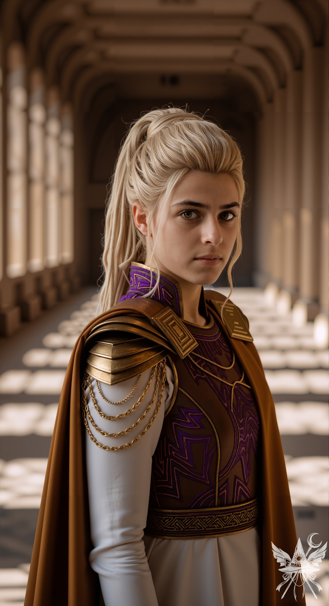
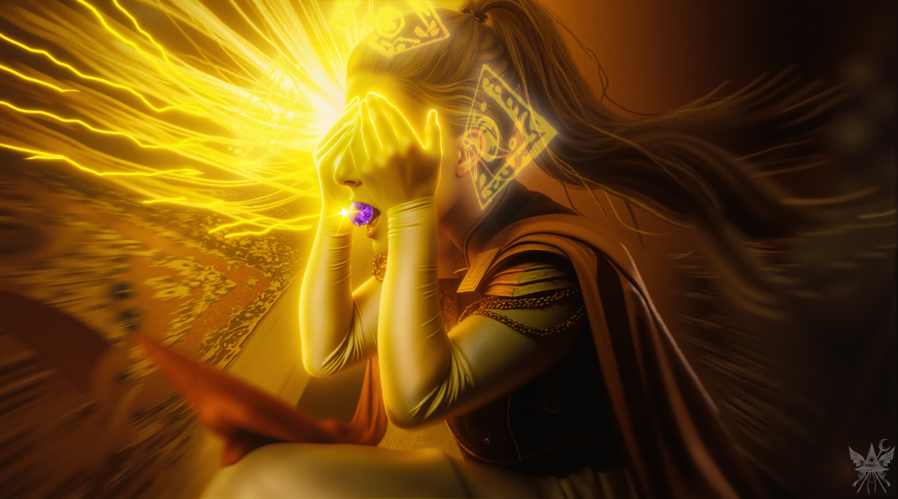
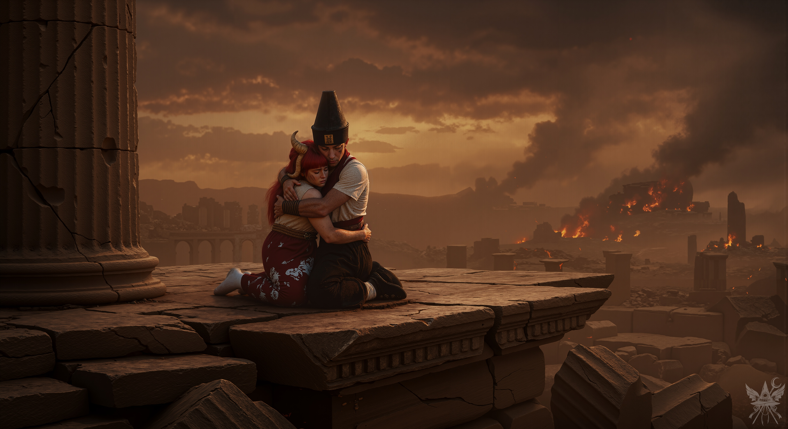
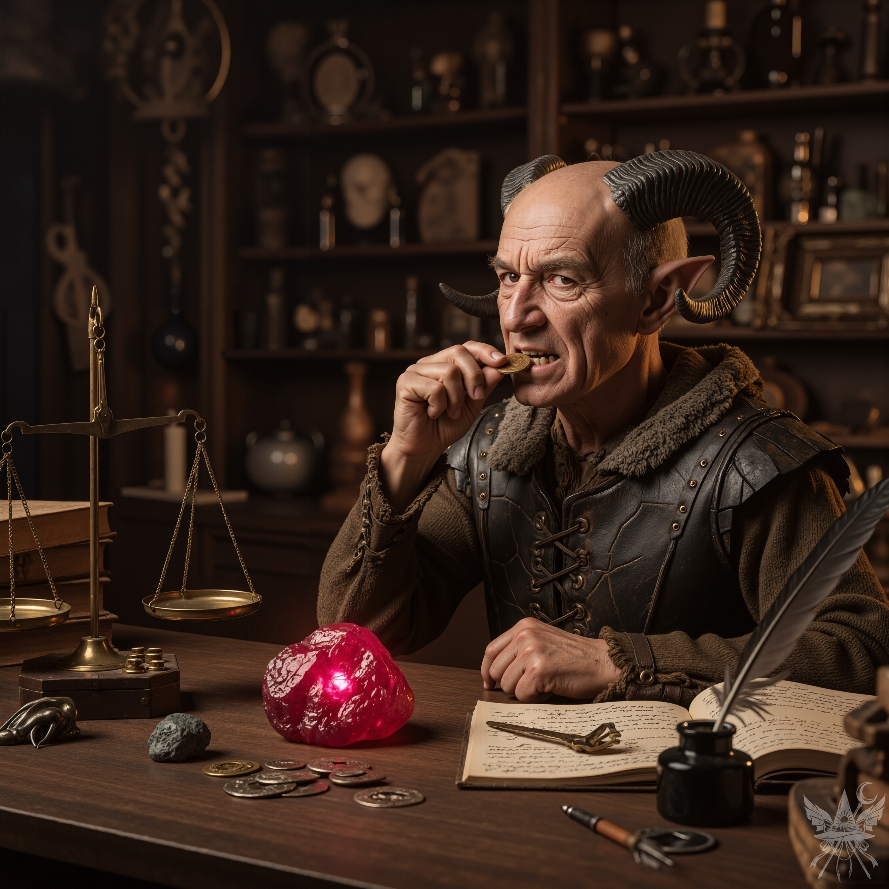

第44章 記憶を取り戻す薬
「ええ、怖いですけど…他に方法もないし…。これで記憶が戻るなら…試させてください。」
（“おもてなし”ねぇ…。エリスの言う通り、この女は見込みのある客は逃がさないわ。油断大敵ね。）
レティが奥へ消えるのを確認すると、メデアは絵に近づき、壁から外した。こんな隠し場所を見破られるとは、レティも思ってもみなかっただろう。氷のブロックを慎重に引き抜くと、その後ろに赤い光がちらつく。ブロックを完全に取り外すと、拳ほどの大きさの原石が現れた。磨かれていない原石だが、鮮やかな赤色に輝き、確かに魔力を放っている。メデアはそれを素早くローブの内ポケットにしまい込み、隠し場所を元に戻した。
（色は赤…アメジストではない。でも、この石も役に立つはず。こんなもの一つ盗まれたところで、あの麻薬女王様には痛くも痒くもないだろう。）
メデアはベンチに戻り、何食わぬ顔でレティを待った。
「さあ、どうぞ〜。これを飲めば、全部思い出すわよ。」
レティは白い粉末が入った袋と水一杯をメデアに差し出す。メデアは恐る恐る袋を受け取った。
「噛まないで、一気に飲み込むのよ〜。そうすれば、あんたのぼんやりした記憶がちゃんと形になるわ。気に入ったら…ささやかなお礼ってことで…もっと…あげてもいいわよ〜。フフ…。」
レティは意味深な笑みを浮かべ、メデアの反応をじっと窺う。
（夢幻館で“眼球”を食べた時も平気だったし…。一回くらいなら中毒にならない…はず。）
メデアは粉末を口に含み、水で一気に飲み込んだ。しかし、しばらく待っても何も感じない。
「あの…いつ効くんですか？ どれくらい待てば…」
＊＊＊

「女神万歳！ 我らが偉大なる母君に、今こそ賛辞を贈らん！ 御身の御力が永久に衰えることなく、この麗しき菊界が、永遠に春の日のごとく栄え続けますように！ さあ、菊の祭典を始めよ！」
高台に立つ布告者の声が、朝の光に照らされた広場に響き渡る。人々は「女神万歳！」と声を揃え、楽団が喇叭と琴で厳かな音楽を奏でる。白い鳥たちが空を舞い、人々は正門の周りに集まって、今か今かと女神の登場を待ちわびている。
「我が女神様、民草どもが待ち焦がれておりまする。恐れながら、御支度を早めていただけませぬか？」
豪華な宮殿の一室で、宮廷魔道士ギョクは、美しい金髪の女神に深々と頭を下げる。女神は侍女に髪を梳かされながら、静かに鏡の前に立っている。

「曲芸師たちに先に出てもらうが良い。わたくしは少し遅れて行列に加わるゆえ」
「かしこまりました。」
「キクリよ、如何したのだ？」
コンガラはキクリに歩み寄り、その手を取った。
「祭りの最中にて席を立つとは、何事ぞ？」
「皆を驚かせたいのじゃ！」
女神は髪を梳く侍女シンに視線を向けた。
「シンよ、客人はいずこより参られた？名を名乗っておったか？」
「いいえ、名乗っておりませぬ。書状には謁見を求むるとの旨と、菊界との友好の証として装飾品を献上したき由のみ記されておりました。」
「キクリよ、我も共に参ろう。」
コンガラは言葉を挟んだ。
「様子を見るまでは安心できぬのだ。」
「また嫉妬しておるのか、コンガラ？ それはよせ。あなたは民を導かねばならぬ。彼らと共にいておくれ、我が愛しき人よ。わたくしはすぐに帰るゆえ。」
「それでよい。そなたの無事が第一ぞ。」
コンガラはキクリの手を離したが、まだ不安そうに彼女を見つめていた。
「案ずるな、何事もなかろう。」
キクリはコンガラの唇に口づけをして彼を安心させると、応接の間へと向かった。
「陛下、女神様のご到着が遅れる旨、民草どもへお伝えいたしましょうか？」
ギョクはコンガラに尋ねた。
「うむ、そうせよ。芸人どもにも、開始の準備を命じよ。我もまた、やむを得ぬ事情にて少し遅れることとなる」
「かしこまりました。」
ギョクはコンガラに深々と頭を下げると、バルコニーへ歩みを進め、祭りのプログラム変更を群衆に告げた。民衆からどよめきが起こったが、それは束の間。再びリズミカルな「女神万歳！」の合唱が、広場に響き渡った。

コンガラはキクリの後を追わずにはいられなかった。心配と嫉妬が胸の中で渦巻き、気が気ではなかった。私室を出ると、真紅の絨毯が敷き詰められた長い廊下を進む。鮮やかな黄色の服を着た相談役の女性が、扉の前で立ち塞がった。
「陛下、女神様は内密の御用にて、どなたも入室を禁じられておりまする。陛下といえども、女神様の御心に背くことは叶わぬかと存じまする。」
「それは貴様の知ったことではない、ユゲミア。通せ。」
「陛下！ 陛下！」
背後からギョクの呼ぶ声が響く。
「民草どもが女神様のお姿を待ち焦がれておりまする！ どうか、お戻りください！」
「うむ。」
コンガラは短く答えると、踵を返し、バルコニーへ出て勢いよく幕を開けた。
広場に集まった人々の歓声はピタリと止み、静寂に包まれた。皆、コンガラの言葉を待っている。
コンガラは両手を天に掲げ、
「我が民よ！ 我が愛しき女神は間もなく参られる。心ゆくまで祭りを楽しめ！ 今日は汝らの祝いの日である！」
キクリの言葉通りに定型文を繰り返す。民がキクリを慕う様は、コンガラにはどうしても受け入れ難いものだったが、どうにか折り合いをつけていた。広場の曲芸師たちが妙技を披露し始めると、人々の中から子供たちの笑い声が上がる。
だが、コンガラには人々が浮かれている様子も、今日が祭典であることさえも、もはやどうでもよかった。彼の心は、ただひたすらキクリへと囚われていた。キクリが傍らにいない一瞬一瞬が、永遠のように感じられた。確かに、キクリは彼を選び、コンガラこそがキクリに最も近い存在だった。しかし… コンガラは常に、キクリが他の者たちにも愛情を注ぎすぎていると感じていた。コンガラの愛はキクリだけに向けられたものだったが、女神は万民を平等に愛し、コンガラをほんの少しだけ多く愛していたのだ。その事実に、コンガラは狂おしいほどの苦しみを味わい、夜も眠れぬ日々を送っていた。
（キクリはどこへ行ってしまったのだ…！？ ）
コンガラは私室に戻り、蓮華座を組んで瞑想を試みた。だが、時は無情にも流れ去るばかりであった…。
「コンガラよ、ご覧くだされ！」
キクリの明るい声が、コンガラの瞑想を打ち破った。彼が目を開けると、愛しい妻の姿に目を奪われる。黄金の冠をかぶり、額には青紫色のアメジストが輝いている。その美しさに、コンガラは思わず息を呑んだ。
「いかがでございましょうか？」
キクリは、少女のように無邪気に微笑んだ。
「無論、よくお似合いでござる、我が愛しきキクリよ。されど…それは一体…？」
コンガラは、キクリの額で輝く石を指差した。
「これは、最初の創造主たちが遺し給うた秘宝じゃ。わたくしに計り知れぬ力を与えてくれるのじゃ。この石の中に、大いなる魔力が脈打っておるのを感じる！」
キクリは興奮を抑えきれない様子で、部屋の中をぐるぐると回り始めた。
「その力をもって、何をなさろうというのだ、我が太陽？」
コンガラは、キクリの言葉に不安を覚えながらも、その瞳から目を離せなかった。
「もっとたくさんの花や木や…動物を創り出すのじゃ。そして…人間も。」
キクリは楽しそうに笑い、目を輝かせた。
「そうすれば、皆がわたくしのことを、もっともっと愛してくれるじゃろう！」
「されど…キクリよ。我は…そなたを深く愛しておる。そなたこそが…我の全てではないのか？」
コンガラの声は、嫉妬と不安で震えていた。
キクリは静かにコンガラの唇に口づけをすると、何も言わずに部屋を出て、正門の方へ向かった。コンガラは、胸の奥に燃え上がる嫉妬を押さえ込みながら、静かに彼女の後ろを追った。
美しい音楽が再び広場に響き渡ると、コンガラ王とキクリ女神は真っ赤な絨毯が敷かれた玉座の階段を下りてきた。儀式を待つ人々が、愛する女神の姿に歓喜する。ひれ伏す者もいれば、
「女神万歳！」
と叫ぶ者もいる。キクリが静かに片手を上げると、人々は一瞬で静まり返った。
キクリは透き通るような声で宣言した。
「我が愛しき民よ！ わたくしは、そなたたち皆を深く愛しておる！ この地に集いし者たち皆に感謝を捧げん！」
キクリは新しい王冠のアメジストにそっと触れると、両手を天へと向けた。すると空に浮かぶ雲が、まるで女神の心に答えるかのように、花や鳥の姿へと美しく形を変えていく。広場に集まった人々は皆、畏敬の念を抱き、ひれ伏した。キクリは言葉を続けた。
「目覚めの月一日、すなわち菊界三千二百年を寿ぐ今日、そなたたちに尽くす創造主たるわたくしは、新たな力を授かりました。これよりこの世界は…」
キクリは言葉を詰まらせ、額に手を当てた。
「…さらに栄え、そなたたちはより大きな喜びを享受するであろう！」
キクリはよろめき、今にも倒れそうになる。コンガラは慌てて駆け寄り、ギョクと共に、中央に置かれた玉座の一つへとキクリを運んだ。
「何事ぞ…！？ 」
コンガラは不安を隠せない様子で呟いた。
「キクリよ！ どうしたのだ！？」
「…案ずるな、我が愛しき人よ…。ただ… 頭が… 痛むだけじゃ…」
キクリは目を閉じ、ぐったりとしてしまう。侍女のシンが騒ぎ立てる人々をなだめながら、コンガラとギョクはキクリを両腕に抱えて私室へと運び、寝台に寝かせた。
「忌々しい！ やはり何者かの奸計か！ ギョク！『使者』どもを捕らえよ！ 急げ！」
コンガラは怒りを露わにし、ギョクに命じた。
「かしこまりました！」
魔術師ギョクは急ぎ部屋を後にした。
コンガラはキクリの肩を揺すり、
「目を覚ませ…」
と囁くが、キクリは意識を取り戻さない。
「…忌々しい… 王冠め…！」
コンガラは王冠を外そうとするが、びくともしない。まるでキクリの頭と一体化してしまったかのようだった。
「陛下、いかがなされましたか？」
ユゲミアが部屋に飛び込んできて、鋭く尋ねた。

「使者どもを探せと命じたはずだ！ どこにおる？ 見たか？」
コンガラは苛立ちを隠さず、ユゲミアを睨みつけた。
ユゲミアは深く頭を下げ、答えた。
「申し訳ありませぬ、陛下。シンが文箱の中に書状を見つけ、早速女神様に渡してしまいました。どうやら、女神様以外、誰も目を通しておらぬようです。」
「貴様たち全員、地獄に落ちろ！ この愚か者どもめが、我が妻に何をしたのだ！？」
コンガラの怒りは頂点に達していた。
「…『我らが女神様』と仰せられるべきでは？」
ユゲミアは恐る恐る指摘した。
「黙れ、罪深き者！」
コンガラは怒りを抑えきれなかった。
「キクリは意識を失っておるのだ！ 分かるか！？」
黄色の衣をまとった相談役ユゲミアは、キクリに近づき、額に手を当てた。
「王冠を外さねばなりませぬ。」
「試みたが、びくともせぬ。」
ユゲミアも王冠を外そうとしたが、無駄だった。そこで、彼女は中央のアメジストに手をかけた。
「ここから、非常に強き魔力が放たれておりまする。」
ユゲミアは懐から小刀を取り出すと、それで石をこじ開けようとした。
「女神様の相談役として、わしは全てを明らかにせねばなりませぬ。」
「何をするのだ、愚か者！」
コンガラはユゲミアに掴みかかり、力ずくで小刀を奪い取った。
その衝撃でアメジストが枠から外れ、床を転がっていった。
その瞬間、キクリは目を開けた。しかし、その瞳には、かつての神聖な光はなかった。コンガラとユゲミアに目もくれず、キクリは寝台から飛び起きると、バルコニーへ駆け出した。コンガラは彼女を止めようとしたが、キクリの速さには到底及ばなかった。
外に出ると、キクリは壁に寄りかかり、不安そうに待つ民たちを見下ろしていた。
「キクリ…？」
コンガラは恐る恐るキクリの手を取ったが、すぐに離した。彼女の腕は、まるで氷のように冷たかったのだ。
「ユゲミア！貴様、何をしたのだ！？」
コンガラは剣を抜いて私室へ駆け込む。鮮やかな黄色の衣をまとったユゲミアは、アメジストを握りしめ、床に伏せてコンガラを見上げていた。その表情には恐怖の色が浮かんでいた。
「ユゲミア！貴様を斬るぞ！」
「な…なぜ…？わしは…キクリ様を救おうとしたまで…。」
ユゲミアは震える声で訴えた。
コンガラは再び怒りに駆られ、剣を振り上げてユゲミアに斬りかかろうとした。
しかし、斬撃がユゲミアに届く寸前、凄まじい衝撃がコンガラを襲った。コンガラは吹き飛ばされ、壁に叩きつけられる。ユゲミアが握るアメジストに斬撃が命中したのだ。石は眩い光を放ち、その光がユゲミアの体へと流れ込み、彼女を包み込んだ。
ユゲミアの体は紅蓮の炎に包まれ、もともと大きかった瞳は、底知れぬ闇を宿したかのように赤黒く輝き始めた。ユゲミアは苦しみもがきながら自らの目をえぐり出す。すると、空いた穴から、さらに二つの目が現れた。彼女の体と衣は崩れ落ち、溶けていく。コンガラは恐怖で身動きが取れず、ただその恐ろしい変貌を見守ることしかできなかった。

ユゲミアの体はさらに二つ目をえぐり出すと、古い目は大きく膨れ上がり、彼女の周囲をゆっくりと回転し始めた。彼女の足はすでに溶けて消滅していたが、両手はまだアメジストを握り締めている。アメジストを口に入れた瞬間、手も消え失せ、黄色の衣をまとっていた体も跡形もなく消え去った。残された頭部は巨大な目玉へと変貌し、五つの恐ろしい魔眼がコンガラを睨みつける。次の瞬間、炎の光線が放たれた。コンガラは剣を振るって応戦するも、一撃を与えるのが精一杯だった。再びバルコニーへ吹き飛ばされ、石畳に叩きつけられる。
コンガラは顔を上げると、豹変したキクリの姿を見た。壁に据えられた銅の浮き彫りと化したキクリは、生気のない目で人々を見下ろしている。広場の人々はパニックに陥り、逃げ惑う者、宮殿へ押し寄せる者で阿鼻叫喚の地獄絵図と化していた。空は重い灰色の雲に覆われ、コンガラの視界を闇が覆い尽くす。
「ユゲミア… ユゲミアを討たねば…！」
コンガラの脳裏に怒りの声が響き渡る。
恐ろしい五つの魔眼はコンガラを追うようにバルコニーへ躍り出ると、彼に炎の光線を放った。コンガラは間一髪で飛び退き、銅と化したキクリにしがみつく。だが、足元のバルコニーは崩れ落ち、群衆の中へと落下する。悲鳴が上がり、誰かを押しつぶした音が聞こえた。
「キクリよ、戻って参れ。そなたが必要なのだ…。戻って参れ…。」
「陛下！ 飛び降りられよ！」
ギョクはコンガラの真下にいる人々を杖で押しのける。
キクリにしがみついていたコンガラだが、再び魔眼の炎の光線に襲われ、落下する。
着地すると、痛みをこらえながら立ち上がり、剣を天に掲げ、人々に向かって大声で宣言する。
「民よ、静まるのだ！ 速やかに家へ戻れ！ 我が必ずやこの事態を収拾せん！」
ギョクは呪文を唱えようとするが、何も起こらない。恐怖に染まった目でコンガラを見つめた。
「魔法が…使えませぬ…。飛ぶことすら…叶わぬようです…。」
コンガラは剣で宙を八の字に切り裂くと、閃光が走った。
「我が必ずや…！」
そう言い残すと、コンガラは建物の中に消えた魔眼を追って走り出す。
シンはギョクに抱き留められ、間一髪で難を逃れた。見る間に宮殿は崩れ落ち、逃げ惑う使用人たちは次々と倒れ、息絶えていく。空からは灰が雨のように降り注ぎ、宮殿を灰色のベールで覆い尽くす。残ったのは、ただ壁だけ。そこには、銅と化したキクリと、正門の残骸だけが、かつての栄華を静かに物語っていた。
銅色と茶色の灰が降り積もる中、コンガラはかろうじて崩れ落ちずに残った離宮へと逃げ込み、銅と化したキクリを見上げた。
侍女シンと宮廷魔道師ギョクは、崩れ落ちた石柱に座り込み、茫然自失としていた。コンガラが姿を現すと、ギョクは顔を上げ、か細い声で言った。

「陛下… あの忌まわしき魔眼を捜索いたしましたが… 見つけることは叶いませなんだ…」
「必ずや見つけ出さねばならぬ！」
コンガラは強い意志を込めて言い放った。
「されど… いかようにすれば…？」
シンは泣き崩れた。ギョクはそっと彼女の肩に手を置いた。
「この灰の下に… あらゆるものが… 埋もれてしまい…もはや…」
二人の様子を見たコンガラは、怒りを抑えきれなかった。
「民は死に、キクリは意識を失っておるというのに… 貴様らはここで愛撫に耽っているのか！？ 下がれ！ 二人とも！」
ギョクは立ち上がり、コンガラの目を見据えた。
「陛下… 灰は街全体を数丈も覆い尽くし… 我らは最も高い場所に居りますが…」
ギョクは深く息を吸い込み、重々しい口調で言った。
「…どうやら… 我々以外… 生き延びた者はおらぬようです…」
＊＊＊
「…ばいいですか？」
視界はまだ霞んでいる。氷の部屋。目の前には、青い服を着た女性――この家の主だろう――が立っている。ベンチに座る若い女の子を、じっと見つめている。
（メデア… 私の名前は…メデア…？）
数秒間、その言葉を反芻する。自分が誰で、どこにいるのか…。記憶の断片が、パズルのピースのように繋がる。あの忌まわしい地獄、コンガラ、そして…魔界…。
「あら、どうかしら？ 昔のことは思い出せた？」
レティは、氷柱のように冷たく、それでいて甘ったるい声で尋ねた。
徐々に感覚が戻る。記憶が洪水のように押し寄せてくる。すべてを思い出した…いや、それ以上だ。
（一体…何が…？）
メデアは頭の中を整理してから、レティに答えた。
「ええ、思い出しました。お気遣い、感謝します。ところで、街に用事があることも思い出したので、そろそろ失礼します。」
「あら、そう。街までの道は分かってる？」
「ええ、大丈夫です。薬、ありがとうございました。それでは。」
メデアは立ち上がり、出口へ向かう。レティは薄ら笑いを浮かべながら、メデアの後をついてくる。ドアの前まで見送られる。
「お気をつけて、人間ちゃん。」
レティは意味深な言葉を投げかけ、妖艶な笑みを深める。
「さようなら。」
そう言うと、メデアは軽く会釈をしてレティに背を向けた。
視界はまだ完全にはっきりしない。体も少しふらつく。それでも、なんとか立っている。雪の吹きだまりに近づくと、エリスの翼の先端がちらりと見えた。
「あら、もう戻ってきたの？ 早かったじゃない」
エリスは雪の塊に腰を下ろしながら言った。
「早かった？…」
メデアは怪訝そうに聞き返した。
「で、何か手に入ったわけ？」
「ええ、見て。」
そう言って、メデアは赤い宝石をエリスに差し出した。
「何これ！？ すごい魔力の触媒じゃない！ 」
エリスはメデアの手から宝石をひったくると、目を輝かせてそれをくるくる回した。
「ちぇっ、ルビーか。やっぱりね。」
「何か問題？ 」
「ルビーはムーラダーラの触媒なのよ。まさか、レティの主要チャクラがそれ？ ガッカリだわ〜。もっとマシなチャクラだと思ってたのに…。」
「私たちには使えないの？」
「ああ、ほとんど役に立たないわね。アタシの主要チャクラはスヴァディシュターナとマニプーラでね。どっちが好きか選べないのよ、肉体的快楽か、権力か！ だから二つ持ってるわけ。ところで、メデっちの主要チャクラがヴィシュッダだってことには驚かないわよ。なんて演技派なの。ふふっ、あんたと二人なら、すごいことができるかもね！ そういえば、戦闘でチャクラを最も効果的に使う方法、知ってる？」
メデアは首をかしげた。
「敵の主要チャクラを見極めて、それと対立するチャクラで攻撃するの。第一チャクラには第七チャクラ、第二チャクラには第六チャクラ…って感じでね。第四チャクラだけが中立で、どのチャクラとも対立しないのよ。防御は、攻撃されてるチャクラと同じやつのフィールドを張ればいいわ。やり方は後で教えてあげる。」
「わかったわ、教えてくれてありがとう。それで、このルビーはどうする？」
メデアは、視界がクリアになり、意識が完全に回復したことに気づいた。
「街の骨董品屋に売って、山分けにしない？ これで少なくとも5,000シンキは手に入るはずよ。行く？」
メデアはローブについた煤を払い落とし、雪で顔を洗った。鏡はないので、手で髪を整える。ポケットから卵を取り出し、スノーレーサーに変えると、エリスと共に再び走り出した。
キクリの言葉、コンガラの悲劇、そしてアメジスト…。頭の中は情報過多でパンク寸前だった。
（キクリの言葉は本当だったのね…。コンガラは一体どうして…？ それに…あの怪物を、どうやって倒せばいいんだろう…。）
メデアは、スノーレーサーを走らせながら、前方を飛ぶエリスに声をかけた。
「エリス、アメジストの場所がわかったわ。」
「あら、ホント？どこなの？」
「あなたの“マスコットキャラ”の体の中よ。ユーマちゃん…だったわね？」
「本当の名前はユウゲン・マガンって言うのよ。アメジストが…あいつの中…？ マジ！？」
「ええ、間違いないわ。ユウゲン・マガンを倒さなきゃいけない。殺すことになるかもしれないけど…。」
エリスは速度を落としてメデアの隣に降りてくると、翼を畳んで雪の上に降り立った。
「ちょっと待ってよ、メデっち。倒すって… あいつがどれほど強いか、わかってんの？ アタシ、色々調べたのよ。まず、ユウゲン・マガンは神綺様の創造物じゃなくて、もともと魔界の住人じゃなかったみたい。次に、あの五つの目はそれぞれ別のチャクラで動いてて、第一から第五まで全部、対処しなきゃなんないのよ。最後に… あいつはただ強いだけじゃなくて、倒した敵の魂を喰らうらしいの！ そのアメジスト、そんなに大事なの？」
「ええ、そのために魔界に来たの。」
エリスは何も言わずに翼を広げると、南西の方角へ向かって飛び立った。メデアもスノーレーサーを走らせ、その後を追った。
街に着くと、エリスはあの騒がしい地区へメデアを引っ張っていった。半地下にある買取屋の店主は、ひからびた顔をした角のある男性悪魔だった。店主はルビーを長い間吟味した後、提示した金額はたったの3,500シンキだった。エリスが粘り強く交渉した結果、ようやく4,000シンキまで値上げさせることに成功した。
「ねぇ、エリス。もしかして、このルビーって私たちにも役に立つんじゃない？」
「ムーラダーラを鍛えるつもり？ 何に使うのよ？ それに、もしこのルビーを残すなら、あんたはアタシに2,000シンキの借金ができるのよ。山分けって忘れてないわよね？ さっさと払いな！」
「これならどう？」
メデアはそう言ってポケットから自分のドラクマを取り出した。
店主は渋い顔をしてドラクマを手に取ると、歯で軽く噛んで真贋を確かめた。

「金貨か…。こりゃあ、面白い」
感心したように呟き、店主はコインをカウンターに置いた。
「3,000シンキだ。交渉はなし。もううんざりなんだよ」
メデアはルビーを手放し、ようやく金のドラクマを両替できた。
「よし！ それじゃあ、ショッピングといくか！ リッチになったんだし！」
エリスはそう言ってシンキを両手に握りしめると、商業地区へメデアを引っ張っていった。
洒落た通りや中世風の店が軒を連ねる商業地区を抜けると、オープンテラスのあるカフェが現れた。エリスはメデアをカフェへ無理やり連れて行き、二人分のケーキとコーヒーを注文した。悪魔の子は上機嫌で、心底楽しんでいるようだった。
カフェで休憩した後、二人は再び歩き始め、魔法のアーティファクトを扱う店に辿り着いた。カウンターには翼のある女性悪魔がいて、エリスを旧知の仲のように出迎えた。メデアは店の品揃えに目を向ける。棚には、様々な触媒や杖の柄、ポーションなどが雑然と置かれ、魔法書がポツンと一冊だけ置かれていた。
[SYSTEM ALERT: 音響兵器デプロイ完了]
▼ 本章の絶望を1000%味わうための専用聴覚データ ▼
■ YouTube：『No Free Lunch in Makai （魔界にタダ飯はない）』